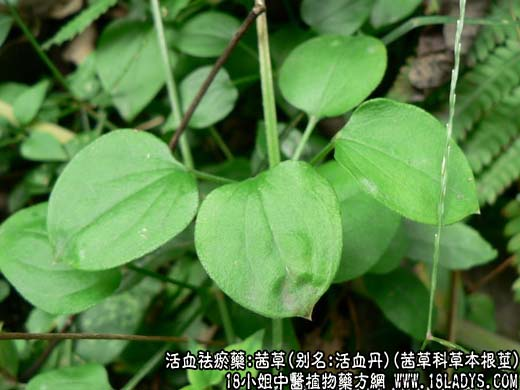
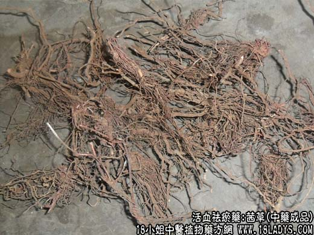

【中药概述】
茜草，别名：活血丹、茹藘、茹卢本、茅蒐、藘茹、蒐、茜根、蒨草、地血、牛蔓、芦茹、血见愁、过山龙、地苏木、红龙须根、沙茜秧根、五爪龙、满江红、九龙根、红棵子根、拉拉秧子根、小活血龙、土丹参、四方红根子、红茜根、入骨丹、红内消，为茜草科草本植物茜草的根及根茎。苦，寒。归肝经。
1．凉血止血：用于血热妄行及兼有瘀滞的出血症，有止血与凉血、祛瘀之效，如<茜根散>、<固冲汤>。
2．祛瘀通经：用于血滞经闭、跌打损伤及痹证关节疼痛等症。常与桃仁，红花，当归，赤芍等配伍。
【药物形态】
性状呈圆柱形，略弯贡或扭曲状，根茎顶端有茎基残留，下部着生数条根，无明显主根。根圆柱形，略弯曲或扭曲，长15-20cm，直径1-1．5cm。表面红棕色或棕色，具纵纵皱纹及少数细根痕，皮部易剥落，露出黄红色本部。质脆，易折断。断面平坦，皮部紫红色，木部浅黄红色。无臭，味微苦，嚼之如软木，且使唾液变红。以条粗长、表面红棕色、无茎基及泥土者佳。
【药效鉴别】茜草凉血而止血，主要用于血热妄行，血脉瘀热的各种出血，可配焦栀子、生地黄、侧柏叶等。
【临证应用】主闭经，属肝肾不足型，原发性或继发性闭经。乌侧骨4份，茜草1份，共为末为丸，饭前服5丸，饮以鲍鱼汁，每日3次。
【药理作用】能缩短凝血时间及纠正肝素所引起的凝血障碍的作用。煎剂对离体兔回肠，能对抗乙酰胆碱的收缩作用。
【化学成分】 含蒽醌类物质，有茜素、茜草素、黑茜素、羟基茜草素、伪羟基茜草素等。
【用量用法】 5——15g，水煎服，或入剂。外用适量。
【使用注意】 无瘀滞者不宜用。
本文解释权归介绍中草药名称的中药大全所有，本文地址：https://www.daquan.com/post/1993.html